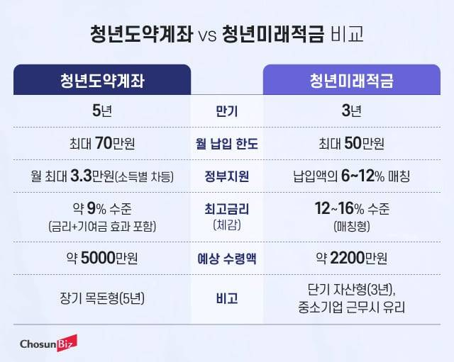

청년미래적금 vs 청년도약계좌, 뭐가 더 이득? 갈아타기 손익 완벽정리
신규는 청년미래적금, 기존 가입자는 가입 연차별로 판단
💡 한 줄 결론
- 새로 가입: 청년도약계좌는 작년에 끝났어. → 무조건 청년미래적금
- 갈아타기 고민 중: 청년도약계좌 가입 1~2년차면 갈아타기 GO, 3년 이상이면 STAY
안녕하세요, 승박이형입니다.
어제 청년미래적금 글을 올렸더니 가장 많이 받은 질문이 이거였어요.
"형, 저 청년도약계좌 이미 가입했는데 갈아타야 해요?"
진짜 많이들 헷갈리시더라고요. 그래서 오늘은 두 상품을 정면 비교하고, 상황별로 어떤 게 이득인지 솔직하게 정리해드릴게요.
📊 한눈에 보는 비교표

| 구분 | 청년도약계좌 (구) | 청년미래적금 (신) |
|---|---|---|
| 출시 시점 | 2023년 6월 | 2026년 6월 22일 |
| 신규 가입 | ❌ 2025년 12월 종료 | ✅ 가능 |
| 만기 | 5년 | 3년 |
| 월 최대 납입 | 70만원 | 50만원 |
| 총 납입 한도 | 4,200만원 | 1,800만원 |
| 기본 금리 | 연 4.5~6% | 연 5% (고정) |
| 우대 금리 | 최대 +1.5% | 최대 +2~3% |
| 정부 기여금 | 소득별 차등 (월 최대 2.4만원) | 일반 6% / 우대 12% |
| 만기 수령액 | 최대 약 5,000만원 | 최대 약 2,227만원 |
| 비과세 혜택 | ✅ | ✅ |
| 신용점수 가점 | ✅ | ❌ (미정) |
| 부분 인출 | ✅ | ❌ |
| 자유적립식 | ❌ (월 정액) | ✅ (자유롭게) |
🥊 라운드별 정면 비교
1라운드: 만기 vs 부담
- 청년도약계좌: 5년 (60개월)
- 청년미래적금: 3년 (36개월)
5년이라는 시간, 진짜 깁니다. 결혼, 이직, 갑작스러운 지출 등 변수가 많아요. 실제로 청년도약계좌 중도해지율이 꽤 높았어요.
승: 청년미래적금 (부담 적음, 끝까지 갈 가능성 ↑)
2라운드: 월 납입 한도
- 청년도약계좌: 월 70만원
- 청년미래적금: 월 50만원
월 70만원이 부담 없는 분이라면 청년도약계좌가 매력적이지만, 사회초년생이나 중소기업 재직자에겐 50만원도 빠듯할 수 있어요.
승: 상황에 따라 다름. 단, 청년미래적금은 자유적립식이라 더 유연
3라운드: 정부 기여금 (찐 혜택!)
- 청년도약계좌: 소득별 차등, 월 최대 2.4만원 (5년 누적 약 144만원)
- 청년미래적금: 납입액의 6~12%, 3년 누적 108만원~216만원
청년미래적금 우대형(중소기업 재직자, 저소득)의 기여금 12%는 정말 강력합니다. 3년 동안 최대 216만원을 그냥 받는 거예요.
승: 청년미래적금 우대형 (시간 대비 효율 최고)
4라운드: 만기 수령액 (절대 금액)
- 청년도약계좌: 최대 약 5,000만원
- 청년미래적금: 최대 약 2,227만원
절대 금액만 보면 청년도약계좌가 2배 이상이에요. 하지만 납입 기간/금액도 다르니까 효율로 봐야 해요.
승: 청년도약계좌 (절대 금액), 청년미래적금 (효율)
5라운드: 실질 금리 효과
- 청년도약계좌: 약 연 9.5% 적금 수준 (5년)
- 청년미래적금: 약 연 13~19% 적금 수준 (3년)
시간 대비 효율은 청년미래적금이 압도적입니다.
승: 청년미래적금
🎯 상황별 추천 (이 부분이 핵심!)
Case 1: 청년도약계좌 가입 1년차 이하 (납입금 적음)
→ 갈아타기 강력 추천 ⭐
이유:
- 매몰 비용 적음
- 청년미래적금이 시간 대비 효율 압도적
- 5년 부담 → 3년으로 단축
- 갈아타기는 이번 6월이 마지막 기회
Case 2: 청년도약계좌 가입 2~3년차
→ 계산 필요. 일반적으로 갈아타기 유리
확인할 것:
- 누적 납입금이 얼마인지
- 받은 정부기여금 얼마인지
- 우대형 대상 여부 (중소기업 재직자/저소득)
- 우대형이라면 무조건 갈아타기!
💡 간단 판단법: 청년도약계좌 누적 납입금 300만원 이하라면 갈아타기 유리할 가능성 큼.
Case 3: 청년도약계좌 가입 3년 이상 (만기 임박)
→ 유지 추천 ⭐
이유:
- 이미 받은 정부기여금 + 누적 이자가 큼
- 만기까지 2년만 더 채우면 5,000만원 가까이 수령
- 갈아타기 시 다시 3년 처음부터 시작 (시간 손해)
Case 4: 청년도약계좌 미가입 + 신규
→ 청년미래적금 무조건! ⭐
청년도약계좌는 작년에 신규 가입 종료됐어요. 선택지 없음.
Case 5: 중소기업 재직자 + 청년도약계좌 가입자
→ 갈아타기 강력 추천 ⭐⭐
우대형 12% 매칭은 정말 강력. 청년도약계좌 어느 단계든 갈아타기 검토 가치 있음.
Case 6: 연봉 6,000만원 초과
→ 둘 다 가입 불가
청년미래적금은 총급여 7,500만원 이하 (개인소득 기준 6,300만원 이하 종합소득)까지 가능하지만 고소득 구간은 정부 기여금 없이 비과세만 적용.
🔄 갈아타기 절차 (실전 가이드)
청년도약계좌에서 청년미래적금으로 갈아타려면 순서가 중요합니다.
✅ 올바른 순서
- 청년미래적금 가입 신청 (6/22~7/3)
- 가입 가능 통보 수령
- 청년미래적금 계좌 개설 (7/27~8/7)
- 그 다음 청년도약계좌 특별중도해지 신청
❌ 절대 하면 안 되는 것
청년도약계좌를 먼저 해지하기 → 일반 중도해지가 돼서 정부기여금 회수 + 비과세 혜택 사라짐!
⚠️ 시한 (놓치면 끝)
- 갈아타기는 이번 최초 가입기간(6/22~8/7)에만 가능
- 다음 모집 때(12월 예정)는 갈아타기 불가
- 진짜 마지막 기회
💰 갈아타기 vs 유지, 실제 손익 계산
가상 시나리오로 계산해볼게요.
케이스 A: 가입 1년차 + 우대형 (중소기업)
- 청년도약계좌 1년 유지 시: 약 870만원 (원금 840 + 기여금 약 30)
- 갈아타기 후 청년미래적금 3년: 약 2,227만원
- 갈아타기가 1년 더 늦지만 약 1,200만원 + 시간 단축
- → 갈아타기 GO
케이스 B: 가입 3년차 + 일반형
- 청년도약계좌 유지 (2년 더): 약 4,500만원
- 갈아타기 후 청년미래적금 3년: 약 2,110만원 + 청년도약계좌 해지금
- → 유지가 약 1,500만원 이상 이득
- → STAY
케이스 C: 가입 2년차 + 우대형
- 청년도약계좌 유지 (3년 더): 약 4,700만원
- 갈아타기 후 청년미래적금 3년: 약 2,227만원 + 해지금
- → 유지가 절대 금액 더 큼, 하지만 시간 효율은 갈아타기
- → 본인 가치관에 따라 결정 (목돈 vs 시간)
❓ 자주 묻는 질문
Q1. 두 상품 동시 가입 가능?
A. 원칙적으로 불가. 다만 이번 6월 한시적으로 갈아타기 허용.
Q2. 갈아타기 한 번 하면 되돌릴 수 있나?
A. 불가. 신중하게 결정하세요.
Q3. 청년도약계좌 만기 채우면 청년미래적금 가입 가능?
A. 불가. 5년 만기 채운 사람은 청년미래적금 가입 대상 아님.
Q4. 청년미래적금 가입 후 청년도약계좌 다시 가입 가능?
A. 불가. 청년도약계좌는 작년에 신규 가입 종료.
Q5. 일반 중도해지 vs 특별 중도해지 차이?
- 일반: 정부기여금 회수 + 비과세 X (손해 큼)
- 특별 (청년미래적금 갈아타기 목적): 기여금/비과세 유지
💡 승박이형의 솔직한 한마디
저는 두 상품 다 분석하면서 느낀 게...
청년도약계좌가 나쁜 게 아니라, 청년미래적금이 진짜 잘 만든 상품이에요.
5년 → 3년 단축, 정부 기여금 비율 ↑, 자유적립식, 우대형 강화. 정부가 이전 상품 단점 다 보완해서 내놓은 느낌입니다.
그래서 솔직히 신규는 청년미래적금이 답입니다.
다만 갈아타기는 이미 받은 혜택과 남은 시간을 잘 따져봐야 해요. 무작정 갈아타기는 손해 보는 경우도 분명히 있어요.
가장 안전한 방법:
- 본인 누적 납입금 + 받은 기여금 확인
- 우대형 대상 여부 확인 (중소기업 재직자라면 갈아타기 매우 유리)
- 6월 22일 가입 시작 전까지 천천히 결정
- 결정했으면 갈아타기 절차 순서 절대 지키기
🚀 다음 액션
- ✅ 청년도약계좌 앱 들어가서 누적 납입금 + 기여금 확인
- ✅ 본인이 우대형 대상인지 확인 (소득 + 회사 규모)
- ✅ 위의 케이스별 추천에서 본인 상황 찾기
- ✅ 결정했으면 6월 22일 5부제 신청일 체크
- ✅ 갈아타기라면 절차 순서 외우기
이 글은 2026년 6월 기준 정보이며, 실제 가입/해지 시 금융위원회·서민금융진흥원 공식 안내를 반드시 확인하세요. 본 글은 일반 정보 제공 목적이며 투자 권유가 아닙니다.